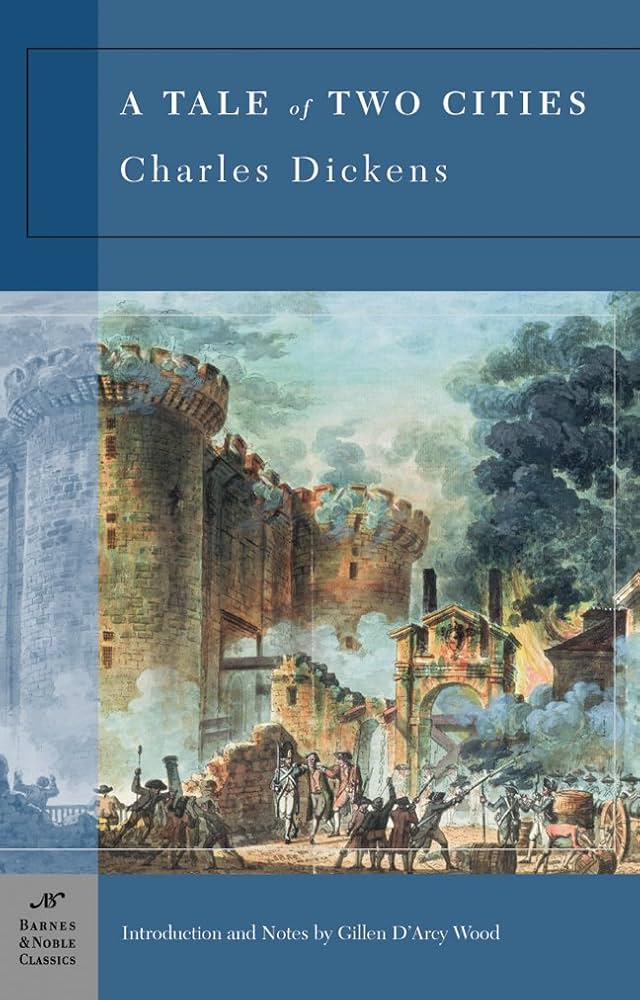
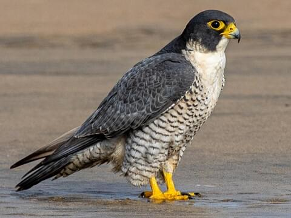

C l a i r e A n
Student at Canyon Crest Academy
Self-Introduction
 My name is Claire An and I am currently a senior at Canyon Crest Academy. I was born in Atlanta, Georgia, and when I was around two, I moved to San Diego. I lived here through most of my childhood, until I moved to South Korea in third grade. Living in a new country was definitely a rewarding experience, being able to see the Winter Olympics in 2018 and travel to various places nearby. I later moved back to the United States and returned to San Diego, but was immediately placed on shutdown due to Covid. Moving back and forth between different areas and countries has made my life much more fulfilling.
My name is Claire An and I am currently a senior at Canyon Crest Academy. I was born in Atlanta, Georgia, and when I was around two, I moved to San Diego. I lived here through most of my childhood, until I moved to South Korea in third grade. Living in a new country was definitely a rewarding experience, being able to see the Winter Olympics in 2018 and travel to various places nearby. I later moved back to the United States and returned to San Diego, but was immediately placed on shutdown due to Covid. Moving back and forth between different areas and countries has made my life much more fulfilling.
Hobbies
One of my greatest hobbies, since I was younger, is reading. Ever since I was young, I would carry around a novel or a book to the doctor’s office or free time during school. Over the years, I have curated a voracious appetite for reading, from the psychology and social science books of Malcolm Gladwell to the dramatic tale of Charles Dickens’s A Tale of Two Cities. Some of my favorites on my shelf include Interpreter of Maladies by Jhumpa Lahiri, Little Women by Louisa May Alcott, and The Ender’s Game by Orson Scott Card. My future reading goals is to read older literature and modern classics exploring the intricacies of the human condition.
Animals
My favorite animals so far have been the hippo and the falcon. Hippos are one of my favorites due to their stature but also their fierce quality. I was lucky enough to see some hippos resting in the lakes of Amboseli when I visited Kenya over spring break. Additionally, I admire falcons for both their speed and vision, being the fastest animal on the planet and sharp eyesight. In the future, I would like to try falconry if the opportunity allows me to.